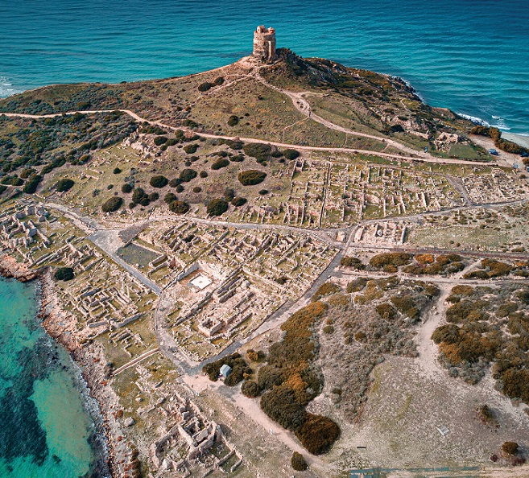
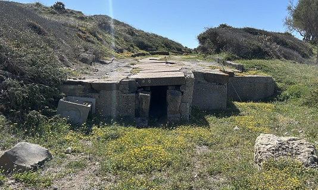
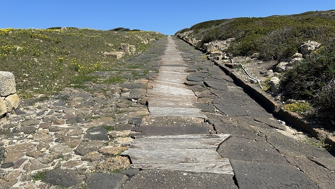
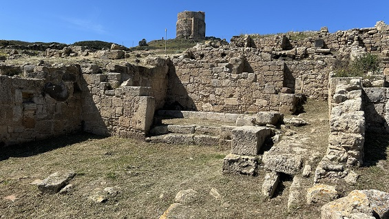
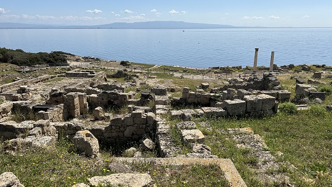
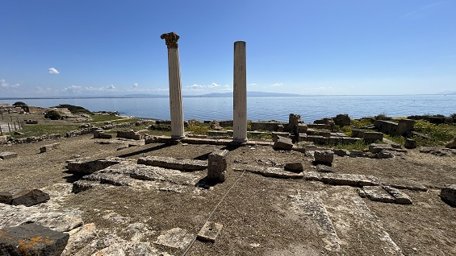
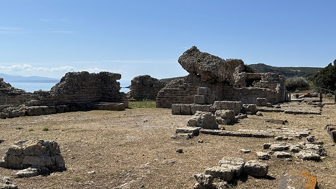
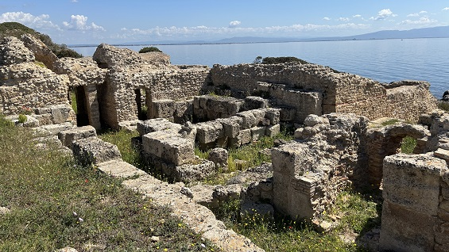
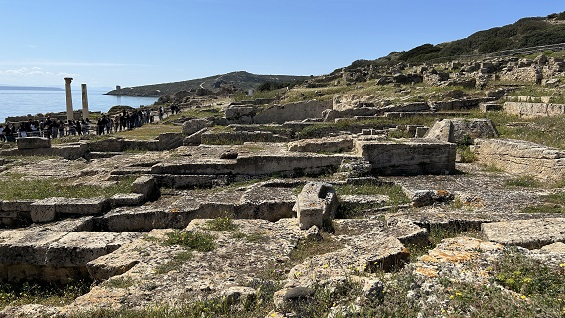
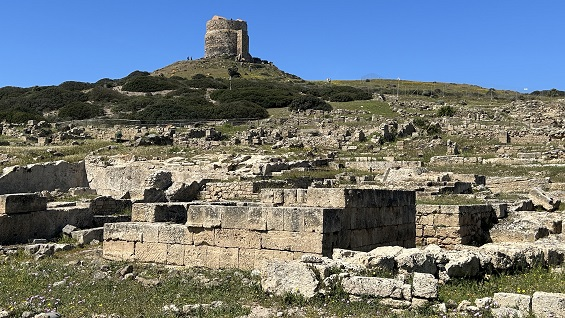

|
THARROS
La antigua ciudad de Tharros se
encuentra en el extremo sur de la península de Sinis, en Cerdeña.
La zona estuvo habitada desde época nurágica, fue emporio fenicio,
fortaleza cartaginesa, urbs romana, capital bizantina, ...

La ciudad de Tharros fue una próspera
colonia fenicia, siglo VIII a.e.c, que surgió junto a un pueblo nurágico
de la Edad del Bronce, conocido como Su Murru Mannu (la gran muralla).
Sobre la que se instaló el tophet, un santuario fenicio-púnico al aire
libre donde el pueblo enterraba las cenizas de los muertos.
Con la llegada de los cartagineses,
siglos VI-III a.e.c., la ciudad experimentó un proceso de fortificación
y también un período de prosperidad económica. No conocemos la ubicación
exacta del primer asentamiento, SI que sabemos la ubicación de sus dos
necrópolis. La más conocida está en Capo San Marcos, y la otra, se
encuentra bajo moderno pueblo de San Giovanni di Sinis, con cientos de
tumbas de fosa y cámara. De estos enterramientos provienen la mayoría de
los artefactos (cerámica, terracotas, joyas, amuletos, escarabajos) que
se exhiben en los principales museos nacionales e internacionales.
En los siglos siguientes, la ciudad experimentó un proceso de
monumentalización con la construcción de imponentes fortificaciones. El
llamado "Templo de las medias columnas dóricas", se construyó durante la
época púnica.
A partir de la conquista romana de Cerdeña en el año 238 a.C., se inició
un proceso de profunda transformación urbana, que concluyó en la época
imperial romana. Se reforzaron las fortificaciones, se pavimentaron las
calles con losas de basalto y se construyó un sistema de alcantarillado.
Se erigieron numerosos edificios públicos monumentales: tres recintos
termales, el acueducto, el llamado castellum aquae. Los enterramientos
romanos aparecen a lo largo de toda la franja costera entre Capo San
Marco y el pueblo de San Giovanni y en la zona entre la iglesia de San
Giovanni y la costa.
|
 |
 |
| |
|
|
 |
 |
| |
|
|
 |
 |
| |
|
|
 |
 |
| |
|

La evidencia cristiana se remonta a la época bizantina, cuando uno de
los baños termales es convertido en un edificio de culto cristiano.
El continuo desmantelamiento de estructuras antiguas, llevado a cabo
durante siglos, ha dificultado significativamente la reconstrucción de
las fases finales de la ciudad. La ciudad experimentó una lenta
decadencia, aunque la sede episcopal se mantuvo hasta 1071, cuando se
trasladó a Oristano, que también se había convertido en la capital del
Judicato de Arborea, marcando el final de Tharros.
|